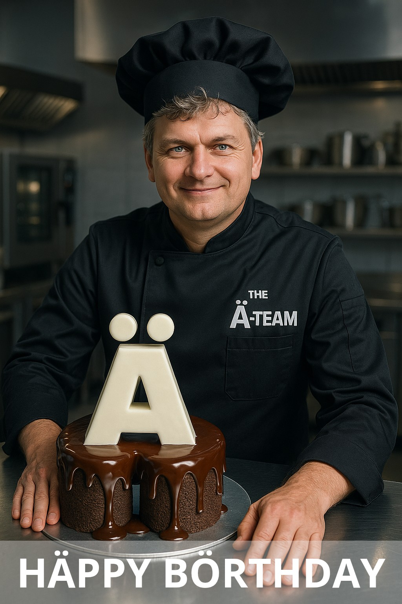

Diese Woche feiert die Kampagne ´The Länd seinen vierten Geburtstag.
Vier Jahre, in denen die Kampagne aus Baden-Württemberg gezeigt hat, dass ein einzelner Umlaut Markengeschichte schreiben kann.
Am 29. Oktober 2021 präsentierte Ministerpräsident Winfried Kretschmann das neue Landesbranding,
das die bisherige Imagekampagne „Wir können alles, außer Hochdeutsch“ ablöste.

4 Jahre THE LÄND - CONGRÄTS von THE Ä-TEAM
Zum Jubiläum
Zum 4. Jubiläum gratulieren wir The Länd zu dieser außergewöhnlichen Markenleistung.
Vier Jahre nach dem Start bleibt festzuhalten:
Der Umlaut Ä hat Geschichte geschrieben.
Und Baden-Württemberg hat gezeigt,
wie wirkungsvoll kulturelle Eigenheiten im Markenauftritt eingesetzt werden können.
Hoch lebe der Umlaut. CONGRÄTS 💛
THE LÄND wurde als Umlaut-Begriff zur Marke
Aus markenstrategischer Sicht war das ein Meilenstein.
Denn nicht der Buchstabe „Ä“, sondern der Begriff „THE LÄND“ wurde zur Marke.
Und hat damit bewiesen, dass sich selbst sprachliche Eigenheiten als
identitätsstiftendes Markenelement inszenieren lassen.
Das „Ä“ wurde dabei zum Symbol:
für Haltung, für regionale Identität und für die kreative Kraft der deutschen Sprache.
Ein Umlaut mit Strahlkraft
Ob man die Kampagne liebt oder kritisch sieht:
Eins lässt sich nicht bestreiten:
The Länd hat den Dialog über Sprache, Marke und Identität neu belebt.
Der Umlaut wurde zum Gesprächsthema in Agenturen, Medien und Unternehmen,
und das Bundesland Baden-Württemberg hat damit gezeigt,
dass Mut zur Sprache auch Mut zur Marke bedeutet.
Dieser Moment war für uns und viele Markenmacher eine Inspiration – zu zeigen, wie Sprache Identität stiften kann.. Wir haben diese Idee weitergedacht:
Was, wenn Marken, Unternehmen und Produkte aus dem DACH-Raum
den Umlaut als Teil ihrer eigenen Identität begreifen?
Wir sind THE Ä-TEAM –
die Agentur für Marken mit Punkten über den Buchstaben.
Fußnote
THE LÄND ist eine eingetragene Marke des Staatsministeriums Baden-Württemberg. THE Ä-TEAM steht in keiner organisatorischen oder inhaltlichen Verbindung zu dieser Kampagne.